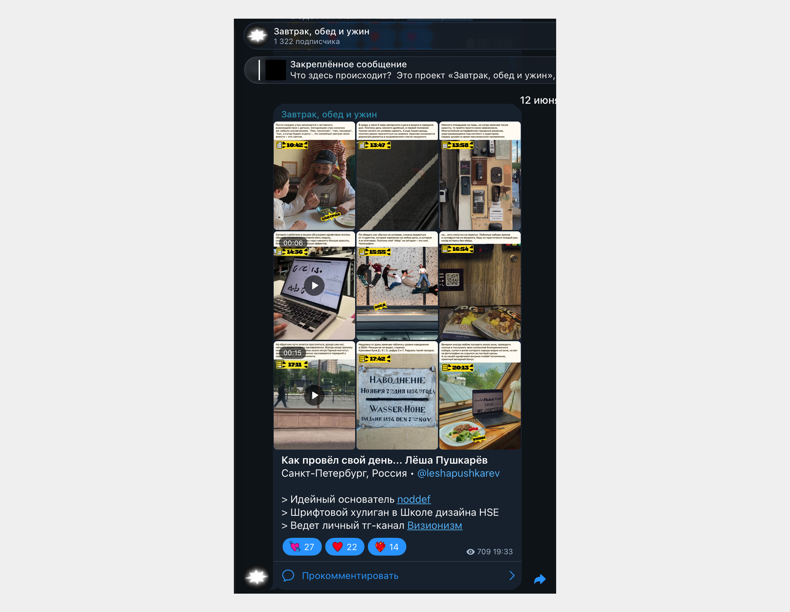
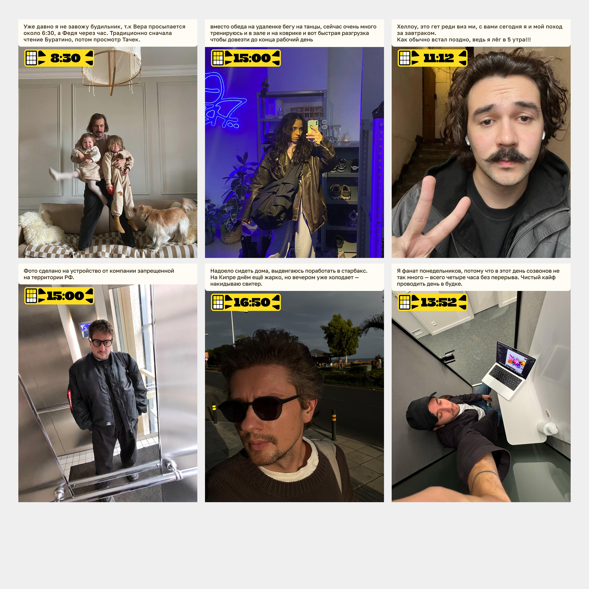
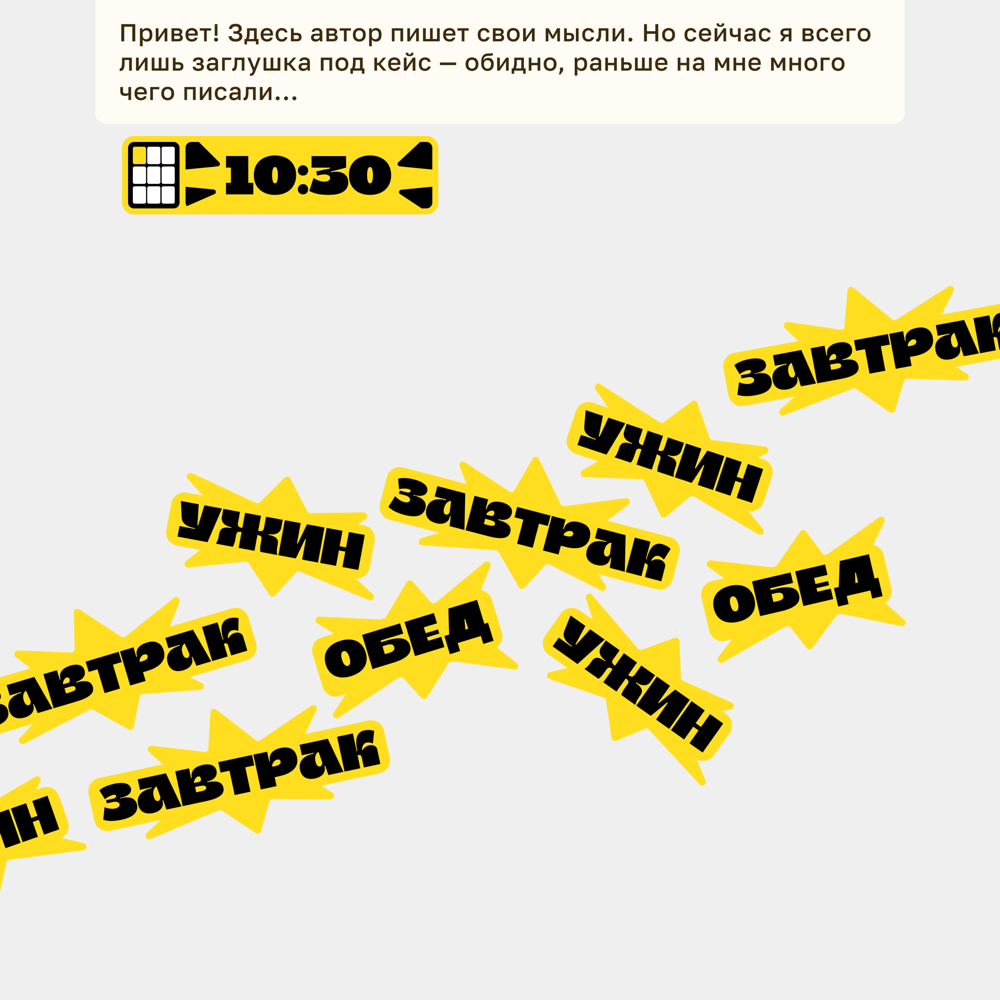

Телеграм-канал «Завтрак, обед и ужин»
В один момент, мне стало очень интересно, а как же живут мои коллеги
Так появился формат, в котором приглашённые дизайнеры рассказывают о том, как провели день, но у них на это есть лишь 9 фотографий и маленькие подписи к каждой Задизайнил универсальное оформление для постов, написал памятку для авторов и всё организовал. К июлю 2026 — больше 150 участников, а канал вырос до 1300 подписчиков исключительно на органическом продвижении
At one point, I became very curious about how my colleagues live That is how the format emerged in which invited designers talk about how they spent their day, but they have only nine photos and brief captions for each one I designed a versatile post layout, wrote a guide for contributors, and handled the organization. By July 2026, there were over 150 participants, and the channel had grown to 1,300 subscribers—entirely through organic promotion



